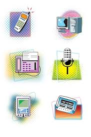
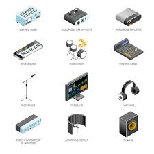

Introducción
Los modelos y dispositivos de comunicación permiten estructurar y comprender el funcionamiento de las redes. Según Tanenbaum, estos modelos facilitan el diseño y la interoperabilidad.
Desarrollo
Los modelos definen funciones por capas, mientras que los dispositivos implementan estas funciones físicamente. Stallings destaca que esta separación simplifica la evolución tecnológica. Aquí va el desarrollo del tema.


Conclusión
En conclusión, los modelos y dispositivos son esenciales para el funcionamiento ordenado de las telecomunicaciones.